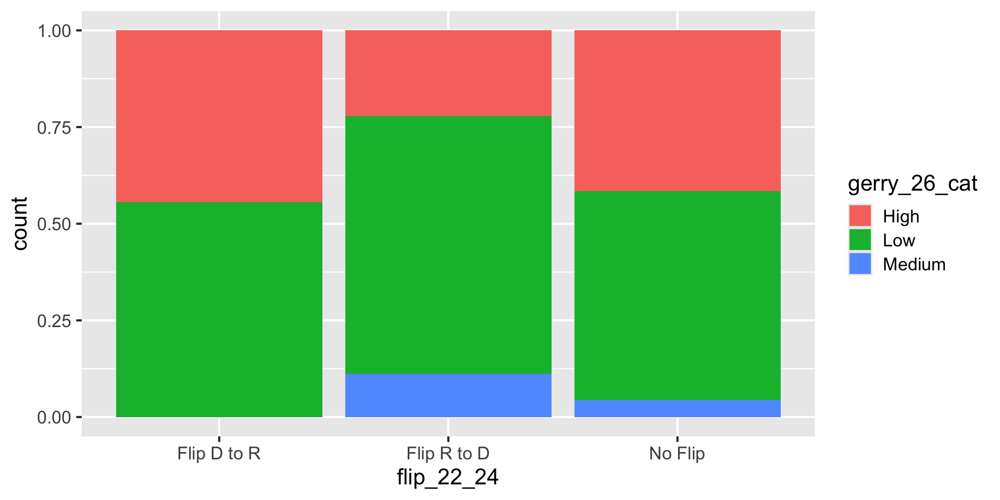
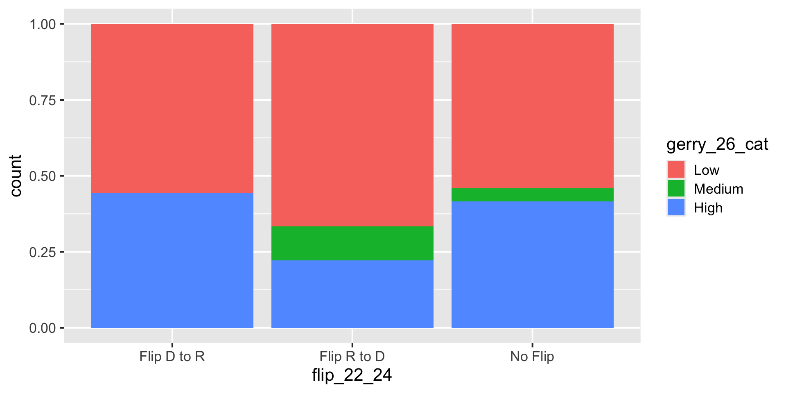

gerrymander_24 <- gerrymander_24 |>
mutate(
flip_22_24 = case_when(
house_party_22 == "Republican" &
house_party_24 == "Democrat" ~ "Flip R to D",
house_party_22 == "Democrat" &
house_party_24 == "Republican" ~ "Flip D to R",
.default = "No Flip"
)
) |>
relocate(house_party_22, house_party_24, flip_22_24, gerry_26, .after = state)Exploratory data analysis II
Lecture 6
Dr. Mine Çetinkaya-Rundel
Duke University
STA 199 - Fall 2026
September 14, 2026
Warm up
While you wait: Get your application exercise
If you haven’t done so at the end of last class:
Go to your
aeproject in Positron.Make sure all of your changes up to this point are committed and pushed, i.e., there’s nothing left in your source control pane.
Click sync to get today’s application exercise file. You can also click on the three dots next to CHANGES and click Pull.
Announcements
TO DO: Add announcements.
From last time: Application exercise
AE 02
Work through the application exercise ae-02. Periodically, and at the end, preview, commit, and push your edits.
Multivariate analysis
Analyzing the relationship between multiple variables:
In general, one variable is identified as the outcome of interest
The remaining variables are predictors or explanatory variables
Plots for exploring multivariate relationships are the same as those for bivariate relationships, but conditional on one or more variables
- Conditioning can be done via faceting or aesthetic mappings (e.g., scatterplot of
yvs.x1, colored byx2, faceted byx3)
- Conditioning can be done via faceting or aesthetic mappings (e.g., scatterplot of
Summary statistics for exploring multivariate relationships are the same as those for bivariate relationships, but conditional on one or more variables
- Conditioning can be done via grouping (e.g., correlation between
yandx1, grouped by levels ofx2andx3)
- Conditioning can be done via grouping (e.g., correlation between
From the application exercise: flip_22_24
mutate()
From grades to categories
How can we combine the 2026 gerrymandering grades into low, medium, and high prevalence of gerrymandering?
- A or B → Low
- C → Medium
- D or F → High
We’ll create a new variable called gerry_26_cat from gerry_26.
mutate()
The
mutate()function transforms (mutates) a data frame by creating a new column or updating an existing oneWe choose a name for the column on the left of
=and describe how to calculate it on the rightTo create
gerry_26_cat, we need different values for different grades
mutate() and case_when()
Use case_when() to recode with multiple conditions:
gerrymander_24 |>
mutate(
gerry_26_cat = case_when(
gerry_26 %in% c("A", "B") ~ "Low",
gerry_26 == "C" ~ "Medium",
gerry_26 %in% c("D", "F") ~ "High"
)
) |>
select(district, gerry_26, gerry_26_cat)# A tibble: 435 × 3
district gerry_26 gerry_26_cat
<chr> <chr> <chr>
1 AK-00 <NA> <NA>
2 AL-01 B Low
3 AL-02 B Low
4 AL-03 B Low
5 AL-04 B Low
6 AL-05 B Low
7 AL-06 B Low
8 AL-07 B Low
9 AR-01 C Medium
10 AR-02 C Medium
# ℹ 425 more rows- Each condition goes on the left of
~, and its new value goes on the right - The first matching condition determines the value
- Grades that don’t match any condition, including missing grades, get
NA
mutate() and store
Creating a column in a pipeline doesn’t change the original data frame:
Error in `select()`:
! Can't select columns that don't exist.
✖ Column `gerry_26_cat` doesn't exist.Check the new variable
# A tibble: 435 × 3
district gerry_26 gerry_26_cat
<chr> <chr> <chr>
1 AK-00 <NA> <NA>
2 AL-01 B Low
3 AL-02 B Low
4 AL-03 B Low
5 AL-04 B Low
6 AL-05 B Low
7 AL-06 B Low
8 AL-07 B Low
9 AR-01 C Medium
10 AR-02 C Medium
# ℹ 425 more rowsWhat value does gerry_26_cat have when gerry_26 is missing? Why?
What’s going on?
The gerrymandering categories appear in an unexpected order. What’s going on?

mutate() and fct_relevel()
flip_22_24is a character variable, so the plot orders its values alphabeticallyfct_relevel()creates a factor with levels in the specified order- We can use
mutate()to overwriteflip_22_24and store the change
gerrymander_24 <- gerrymander_24 |>
mutate(
gerry_26_cat = fct_relevel(gerry_26_cat, "Low", "Medium", "High")
)
gerrymander_24 |>
select(district, gerry_26, gerry_26_cat)# A tibble: 435 × 3
district gerry_26 gerry_26_cat
<chr> <chr> <fct>
1 AK-00 <NA> <NA>
2 AL-01 B Low
3 AL-02 B Low
4 AL-03 B Low
5 AL-04 B Low
6 AL-05 B Low
7 AL-06 B Low
8 AL-07 B Low
9 AR-01 C Medium
10 AR-02 C Medium
# ℹ 425 more rowsRevisit the plot
How does the distribution of 2022–2024 flip outcomes vary by prevalence of gerrymandering for the 2026 election?

group_by(), summarize(), count()
Spot the difference
What does group_by() do?
# A tibble: 8 × 3
flip_22_24 gerry_26_cat n
<chr> <fct> <int>
1 Flip D to R Low 5
2 Flip D to R High 4
3 Flip R to D Low 6
4 Flip R to D Medium 1
5 Flip R to D High 2
6 No Flip Low 220
7 No Flip Medium 18
8 No Flip High 169gerrymander_24 |>
filter(!is.na(gerry_26_cat)) |>
count(flip_22_24, gerry_26_cat) |>
group_by(flip_22_24)# A tibble: 8 × 3
# Groups: flip_22_24 [3]
flip_22_24 gerry_26_cat n
<chr> <fct> <int>
1 Flip D to R Low 5
2 Flip D to R High 4
3 Flip R to D Low 6
4 Flip R to D Medium 1
5 Flip R to D High 2
6 No Flip Low 220
7 No Flip Medium 18
8 No Flip High 169Let’s simplify!
What does group_by() do in the following pipeline?
# A tibble: 50 × 2
state mean_trump_24
<chr> <dbl>
1 Alabama 64.0
2 Alaska 54.5
3 Arizona 50.3
4 Arkansas 64.6
5 California 38.2
6 Colorado 42.9
7 Connecticut 41.8
8 Delaware 41.9
9 Florida 55.2
10 Georgia 49.9
# ℹ 40 more rowsgroup_by()
Group by converts a data frame to a grouped data frame, where subsequent operations are performed once per group
ungroup()removes grouping
# A tibble: 435 × 4
# Groups: state [50]
state district house_party_22 house_party_24
<chr> <chr> <chr> <chr>
1 Alaska AK-00 Democrat Republican
2 Alabama AL-01 Republican Republican
3 Alabama AL-02 Republican Democrat
4 Alabama AL-03 Republican Republican
5 Alabama AL-04 Republican Republican
6 Alabama AL-05 Republican Republican
7 Alabama AL-06 Republican Republican
8 Alabama AL-07 Democrat Democrat
9 Arkansas AR-01 Republican Republican
10 Arkansas AR-02 Republican Republican
# ℹ 425 more rowsgerrymander_24 |>
select(state, district, house_party_22, house_party_24) |>
group_by(state) |>
ungroup()# A tibble: 435 × 4
state district house_party_22 house_party_24
<chr> <chr> <chr> <chr>
1 Alaska AK-00 Democrat Republican
2 Alabama AL-01 Republican Republican
3 Alabama AL-02 Republican Democrat
4 Alabama AL-03 Republican Republican
5 Alabama AL-04 Republican Republican
6 Alabama AL-05 Republican Republican
7 Alabama AL-06 Republican Republican
8 Alabama AL-07 Democrat Democrat
9 Arkansas AR-01 Republican Republican
10 Arkansas AR-02 Republican Republican
# ℹ 425 more rowsgroup_by() |> summarize()
A common pipeline is group_by() and then summarize() to calculate summary statistics for each group:
gerrymander_24 |>
group_by(state) |>
summarize(
mean_trump_24 = mean(trump_24, na.rm = TRUE),
median_trump_24 = median(trump_24, na.rm = TRUE)
)# A tibble: 50 × 3
state mean_trump_24 median_trump_24
<chr> <dbl> <dbl>
1 Alabama 64.0 68.5
2 Alaska 54.5 54.5
3 Arizona 50.3 50.9
4 Arkansas 64.6 65.1
5 California 38.2 37.4
6 Colorado 42.9 45.3
7 Connecticut 41.8 42.0
8 Delaware 41.9 41.9
9 Florida 55.2 57.4
10 Georgia 49.9 58.8
# ℹ 40 more rowsgroup_by() |> summarize()
This pipeline can also be used to count number of observations for each group:
summarize()
name_of_summary_statistic: Anything you want to call it!- Recommendation: Keep it short and evocative
summary_function():n(): number of observationsmean(): meanmedian(): mediansd(): standard deviationmin(): minimummax(): maximumIQR(): inter-quartile rangequantile(): quantile (e.g., 0.25, 0.75, etc.)
Spot the difference
What’s the difference between the following two pipelines?
count()
Count the number of observations in each level of variable(s)
Place the counts in a variable called
n
Review
How would you write the following pipeline with count() instead?
# A tibble: 50 × 2
state n
<chr> <int>
1 California 52
2 Texas 38
3 Florida 28
4 New York 26
5 Illinois 17
6 Pennsylvania 17
7 Ohio 15
8 Georgia 14
9 North Carolina 14
10 Michigan 13
# ℹ 40 more rowsgerrymander_24 |> arrange(state) |> count()gerrymander_24 |> count(state) |> arrange(desc(n))gerrymander_24 |> count(state) |> sort(n)gerrymander_24 |> count(state, sort = TRUE)